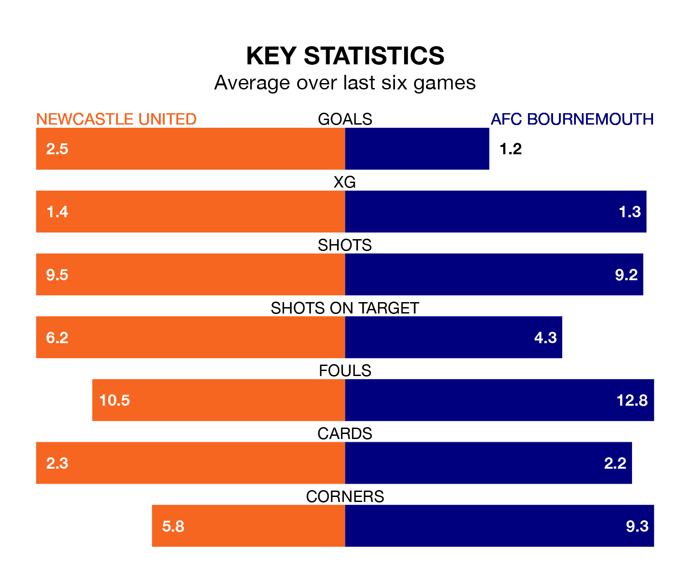

AFC Bournemouth travel to St. James' Park looking to secure a first win in six Premier League games against Newcastle United on Saturday.
The Cherries have lost three and drawn two matches since they last earned three points – against Fulham on December 26.
They face a Newcastle side who have won two and drawn one over that time.
With 51 goals in 24 games so far this season, Newcastle are scoring more than average in the league with 2.1 goals per game. And they are conceding at an average rate, letting in 39 goals at a rate of 1.6 per game.
Bournemouth, meanwhile, are below average scorers, with 1.3 goals per game, compared to a league average of 1.6. They have conceded 1.9 goals per game.
In the last 10 years, Newcastle and Bournemouth have played each other on 12 occasions. Newcastle won five of them, Bournemouth three, and they drew four times.
On average, the Magpies scored 1.4 goals and the Cherries 1.2 in those matches.
Their last meeting was on November 11, when Bournemouth won 2-0 at home.
In Dominic Solanke, the Cherries have one of the league's most on-form strikers so far this season. He has notched 13 goals in 23 appearances, to sit third in the scoring charts.
His goal rate of one every 158 minutes is slightly quicker than that of Alexander Isak, United's top scorer with a goal every 119 minutes, and a total of 10 goals in 17 games.
The Magpies are seventh in the table after 24 games, of which they have won 11 and drawn three, earning 36 points.
The away side are seven places behind the hosts in 14th, with seven wins and six draws putting them on 27 points.
Newcastle's last match was on Saturday, a 3-2 win against Nottingham Forest, with Bruno Guimarães (two) and Fabian Schär getting the goals for the Magpies.
Bournemouth lost 3-1 against Fulham last time out, also on February 10, with Marcos Senesi on the scoresheet.
Updated: 13:30 (UTC), 12/02/24